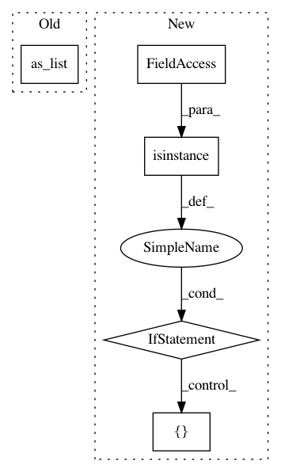

741ad9fb33a98023d76c6b962ae77183745d4ffa,tensorlayer/models/core.py,Model,__call__,#Model#Any#Any#,62
Before Change
// check inputs
if isinstance(self._inputs, Layer):
print(self._inputs._outputs_shape)
print(inputs.get_shape().as_list())
exit()
// TODO: check inputs corresponds with self._inputs
After Change
elif isinstance(inputs, np.ndarray):
inputs = tf.convert_to_tensor(inputs)
inputs_list = inputs if isinstance(inputs, list) else [inputs]
outputs_list = self._outputs if isinstance(self._outputs, list) else [self._outputs]
results = list()
memory = dict()
In pattern: SUPERPATTERN
Frequency: 3
Non-data size: 5
Instances
Project Name: tensorlayer/tensorlayer
Commit Name: 741ad9fb33a98023d76c6b962ae77183745d4ffa
Time: 2019-01-17
Author: jingqing.zhang15@imperial.ac.uk
File Name: tensorlayer/models/core.py
Class Name: Model
Method Name: __call__
Project Name: tensorflow/models
Commit Name: 54832af86a4f756ec95124511483966a2575f95d
Time: 2020-08-24
Author: hongkuny@google.com
File Name: official/nlp/modeling/models/seq2seq_transformer.py
Class Name: Seq2SeqTransformer
Method Name: call
Project Name: tensorflow/models
Commit Name: 20fa96f634a4b6d342c2b66d306d93e7b0ac2ffb
Time: 2020-08-24
Author: hongkuny@google.com
File Name: official/nlp/modeling/models/seq2seq_transformer.py
Class Name: Seq2SeqTransformer
Method Name: call